◆「GUDAGUDAPick Up召喚(每日交替)」期間◆
期間:2020年10月2日(五) 17:00～10月16日(五) 11:59
期間限定「GUDAGUDAPick Up召喚(每日交替)」舉辦！
今回は、下述的從者以期間限定登場！ ・★5(SSR)沖田總司(Saber) ・★5(SSR)土方歲三 ・★3(R)岡田以藏
下述的從者以每日交替Pick Up！ ・★5(SSR)沖田總司(Saber) ・★5(SSR)土方歲三
另外，下述的從者常駐Pick Up ・★3(R)岡田以藏
Pick Up期間中，Pick Up對象從者的出現機率提升！
詳情請在聖晶石召喚畫面左下的召喚詳細確認。
11次召喚中確定1張★4(SR)以上和確定1位★3(R)以上的從者！ ※確定★4(SR)以上包含從者和概念禮裝。 ※本頁面皆為開發中圖片。會有與實際圖片相異的情況。
◆有關從者的注意◆
※請注意本召喚做為每日交替，下述的從者就算舉辦期間中也有不會被抽出來的日子。
・★5(SSR)沖田總司(Saber)
・★5(SSR)土方歲三
※下述的從者在Pick Up期間結束後不會追加到故事召喚。
・★5(SSR)沖田總司(Saber)
・★5(SSR)土方歲三
・★3(R)岡田以藏
※請注意下述的從者不會從友情點數召喚被抽出。
・★3(R)岡田以藏
◆「GUDAGUDAPick Up召喚(每日交替)」Pick Up內容◆
| Pick Up期間 | Pick Up內容 | |
|---|---|---|
| 每日交替Pick Up | 全天Pick Up | |
| 10/2(五) 17:00～ 10/4(日) 22:59 |
★5 沖田總司(Saber) | ★3 岡田以藏 |
| 10/4(日) 23:00～ 10/7(三) 22:59 |
★5 土方歲三 | |
| 10/7(三) 23:00～ 10/10(六) 22:59 |
★5 沖田總司(Saber) ★5 土方歲三 |
|
| 10/10(六) 23:00～ 10/12(一) 22:59 |
★5 沖田總司(Saber) | |
| 10/12(一) 23:00～ 10/14(三) 22:59 |
★5 土方歲三 | |
| 10/14(三) 23:00～ 10/16(五) 11:59 |
★5 沖田總司(Saber) | |
※請注意會以每日交替變更Pick Up的從者。
 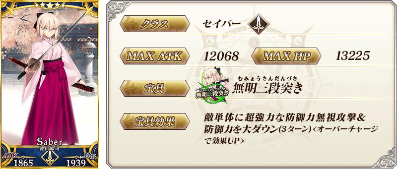
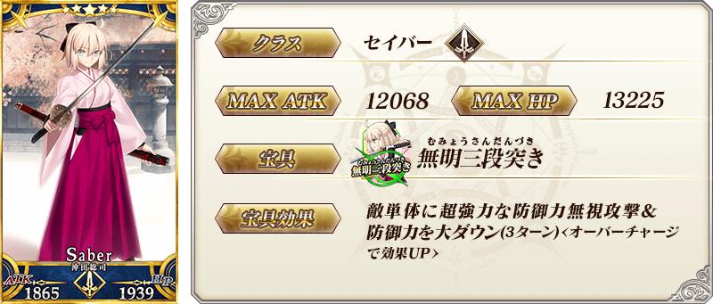


 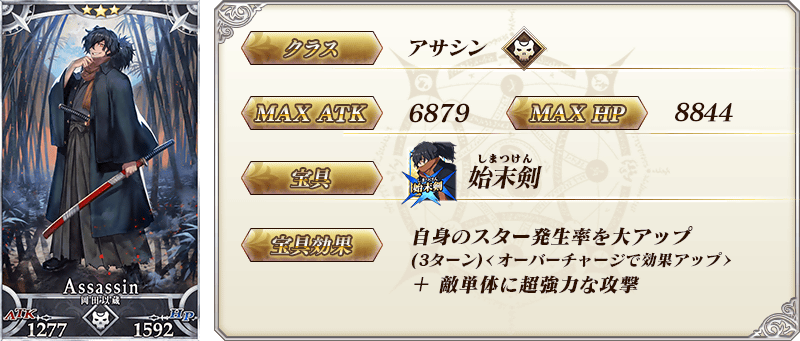
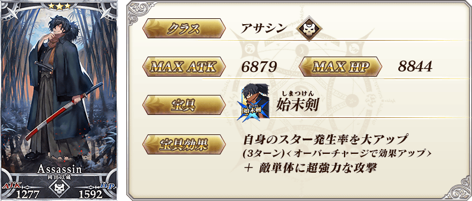
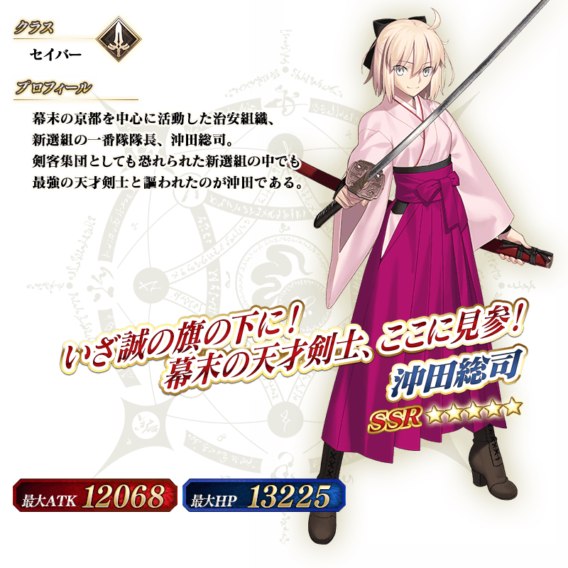
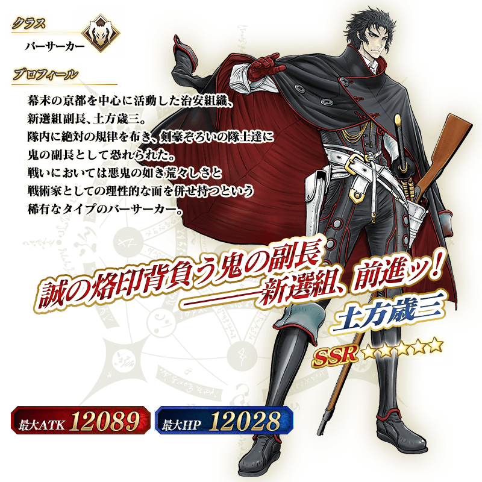
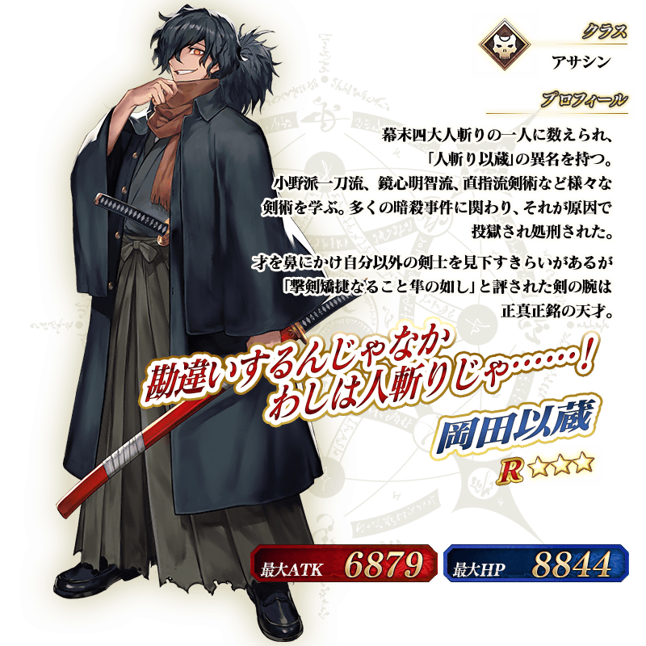
「★5(SSR)沖田總司(Saber)」的戰鬥動作及寶具演出翻新！
在「Fate/Grand Order」官方網站內的公告中，以影片公開寶具演出，敬請確認。
◆翻新實施時間◆
2020年10月2日(五) 17:00～
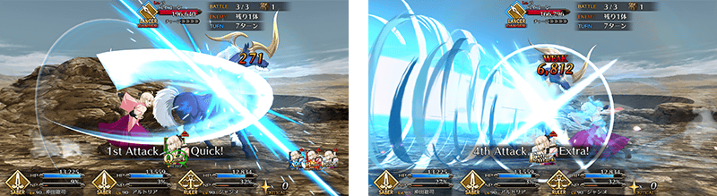
【10月14日(三)追記】
「★5(SSR)沖田總司(Saber)」的靈衣開放權做為期間限定活動「超古代新選組列傳 GUDAGUDA邪馬台國2020」的報酬登場！
可入手上述靈衣開放權做為本活動的特定活動關卡報酬。
另外，想靈衣開放的話，除了靈衣開放權外再加上必須滿足一些開放條件。
◆有關靈衣開放權的注意◆
※本次追加的「★5(SSR)沖田總司(Saber)」靈衣是只有外觀的變化，語音沒變化的「簡易靈衣」。
※「★5(SSR)沖田總司(Saber)」的靈衣開放權，只限期間限定活動「超古代新選組列傳 GUDAGUDA邪馬台國2020」的活動舉辦期間才能入手。
※請注意未持有「★5(SSR)沖田總司(Saber)」的情況，可入手靈衣開放權。但無法進行靈衣開放。
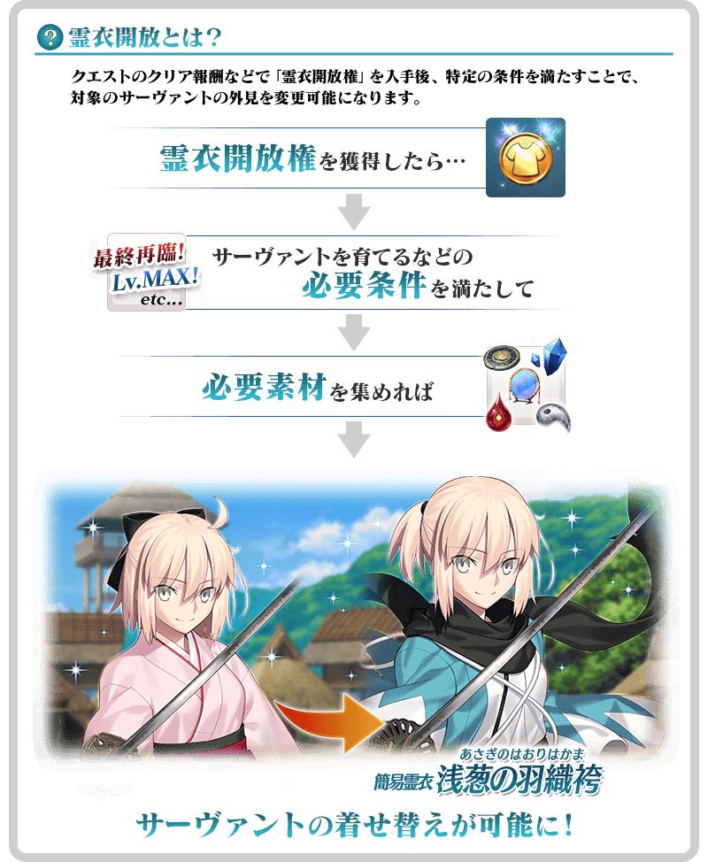

「靈衣開放」是自強化畫面進行。
※「靈衣開放」後會自動切換戰鬥角色和圖示。若想回到「靈衣開放」前的狀態和變成其他再臨階段的情況，可自從者詳細畫面變更。 ※進行「靈衣開放」不會讓職階和能力等有所變化。
【10月14日(三)追記】
介紹開放簡易靈衣「浅葱の羽織袴」的「★5(SSR)沖田總司(Saber)」寶具演出！
在「Fate/Grand Order」官方網站內的公告中，以影片公開寶具演出，敬請確認。
介紹在本召喚Pick Up的2位從者寶具演出！
在「Fate/Grand Order」官方網站內的公告中，以影片公開寶具演出，敬請確認。
【★5(SSR)土方歲三】
【★3(R)岡田以藏】

強化「★5(SSR)沖田總司(Saber)」「★5(SSR)土方歲三」的特別關卡「從者強化關卡」，在迦勒底之門永久追加。
不僅進行對象從者的強化，也可獲得聖晶石做為關卡通過報酬。
※請注意在從者強化關卡沒有文字冒險部份。
◆追加時間◆
2020年10月2日(五) 17:00～
◆開放條件◆
持有的強化對象從者，必須使其span class="notice">最終再臨。
※未持有對象從者的話，不會出現關卡。
※關卡沒有舉辦期限。
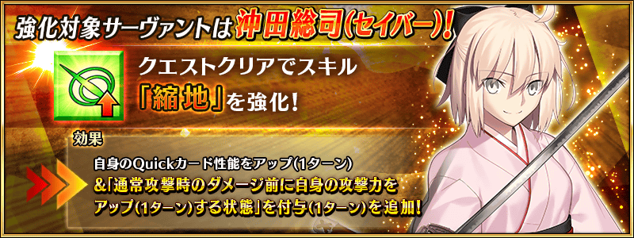
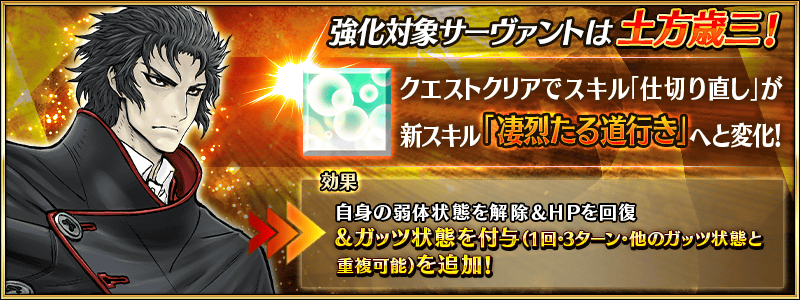
其他還有，「狩獵關卡 第9彈」同時舉辦！
關於詳情，請自下述橫幅確認。
■「狩獵關卡 第9彈」詳細情報 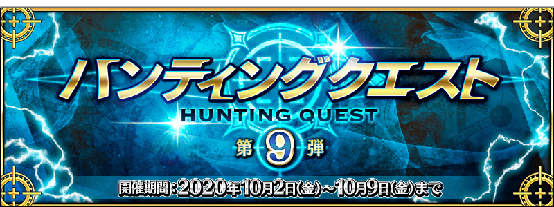